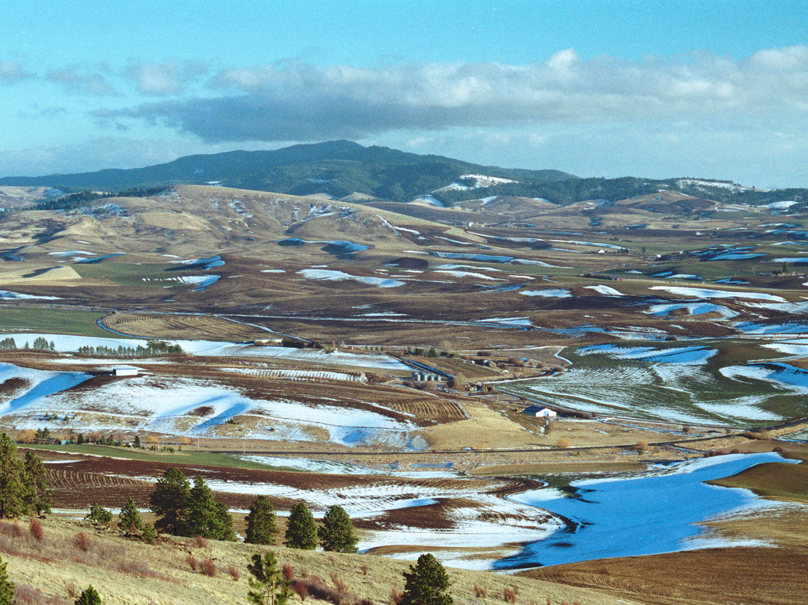

Washington Travel Guide
State in the Pacific Northwest region of the Western United States, named for George Washington, with the state's largest city Seattle, along Puget Sound, an inlet of the Pacific Ocean consisting of numerous islands, deep fjords, and bays carved out by glaciers and the remainder of the state consisting of deep temperate rainforests in the west and mountain ranges in the west, central, northeast, and far southeast

Kamiak Butte County Park
David Dugan, CC BY-SA 3.0, via Wikimedia Commons, via Wikimedia Commons; Image Size Adjusted
I Dont Know Where To Go...?
Kamiak Butte County Park
David Dugan, CC BY-SA 3.0, via Wikimedia Commons, via Wikimedia Commons; Image Size Adjusted
I want to hike, climb mountains, canyons, valleys...?
Kamiak Butte County Park
David Dugan, CC BY-SA 3.0, via Wikimedia Commons, via Wikimedia Commons; Image Size Adjusted
I want to see museums, historic sites, etc.
Kamiak Butte County Park
David Dugan, CC BY-SA 3.0, via Wikimedia Commons, via Wikimedia Commons; Image Size Adjusted
I want a beach / family / romantic trip...
Itineraries · Best of Lists · Locations by Region · Location by State
Kamiak Butte County Park
David Dugan, CC BY-SA 3.0, via Wikimedia Commons, via Wikimedia Commons; Image Size Adjusted
I Dont Know Where To Go...?
Top Itineraries · Best of Lists · Locations by Region · Location by State
Overview
Washington is a state in the Pacific Northwest region of the Western United States. Named for George Washington, the first U.S. president, the state was made out of the western part of the Washington Territory, which was ceded by the British Empire in 1846, in accordance with the Oregon Treaty in the settlement of the Oregon boundary dispute. The state was admitted to the Union as the 42nd state in 1889. Olympia is the state capital; the state's largest city is Seattle. Washington is often referred to as Washington state to distinguish it from the nation's capital, Washington, D.C.
Approximately 60 percent of Washington's residents live in the Seattle metropolitan area, the center of transportation, business, and industry along Puget Sound, an inlet of the Pacific Ocean consisting of numerous islands, deep fjords, and bays carved out by glaciers. The remainder of the state consists of deep temperate rainforests in the west; mountain ranges in the west, central, northeast, and far southeast; and a semi-arid basin region in the east, central, and south, given over to intensive agriculture. Mount Rainier, an active stratovolcano, is the state's highest elevation, at almost 14,411 feet (4,392 meters).
Washington is a leading lumber producer; its rugged surface is rich in stands of Douglas fir, hemlock, ponderosa pine, white pine, spruce, larch, and cedar.
The Cascade Range has several volcanoes, which reach altitudes significantly higher than the rest of the mountains. From north to south, these major volcanoes are Mount Baker, Glacier Peak, Mount Rainier, Mount St. Helens, and Mount Adams. All are active volcanoes. Mount Rainier, the tallest mountain in the state, is 50 miles (80 km) south of the city of Seattle, from which it is prominently visible.
Western Washington also is home of the Olympic Mountains, far west on the Olympic Peninsula, which support dense forests of conifers and areas of temperate rainforest. These deep forests, such as the Hoh Rainforest, are among the only rainforests in the continental United States. While Western Washington does not always suffer from a high amount of rainfall as measured in total inches of rain per year, it does consistently have more rainy days per year than most other places in the country.
Eastern Washington—the part of the state east of the Cascades—has a relatively dry climate, in distinct contrast to the west side. It includes large areas of semiarid steppe and a few truly arid deserts in the rain shadow of the Cascades. Despite the limited amount of rainfall, agriculture is an extremely important business throughout much of Eastern Washington, as the soil is highly productive and irrigation, aided by dams along the Columbia River, is fairly widespread.
On May 18, 1980, following a period of heavy tremors and small eruptions, the north face of Mount St. Helens slid off in the largest landslide in recorded history before erupting violently, destroying a large part of the top of the volcano. The eruption flattened the forest up to 20 km north of the volcano, killed 57 people, flooded the Columbia River and its tributaries with ash and mud, and blanketed large parts of Washington eastward and other surrounding states in ash, making day look like night.
Significant business within the state include the design and manufacture of aircraft (Boeing), automotive (Paccar), computer software development (Microsoft, Bungie, Amazon, Nintendo of America, Valve, ArenaNet), telecom (T-Mobile US), electronics, biotechnology, aluminum production, lumber and wood products (Weyerhaeuser), mining, beverages (Starbucks, Jones Soda), real estate (John L. Scott, Colliers International, Windermere Real Estate, Kidder Mathews), retail (Nordstrom, Eddie Bauer, Car Toys, Costco, R.E.I.), and tourism (Alaska Airlines, Expedia, Inc.).
Among Washington's resident billionaires are, as of March 2021, both the first and the second wealthiest people in the world: Jeff Bezos of Amazon, with a net worth of $176.6 billion, and Bill Gates of Microsoft, at of $124.3 billion.
There are extensive waterways around Washington's largest cities, including Seattle, Bellevue, Tacoma and Olympia. The state highways incorporate an extensive network of bridges and the largest ferry system in the United States to serve transportation needs in the Puget Sound area. Washington's marine highway constitutes a fleet of twenty-eight ferries that navigate Puget Sound and its inland waterways to 20 different ports of call, completing close to 147,000 sailings each year.
This article uses material from the Wikipedia article "Washington (state)", which is released under the Creative Commons Attribution-Share-Alike License 3.0